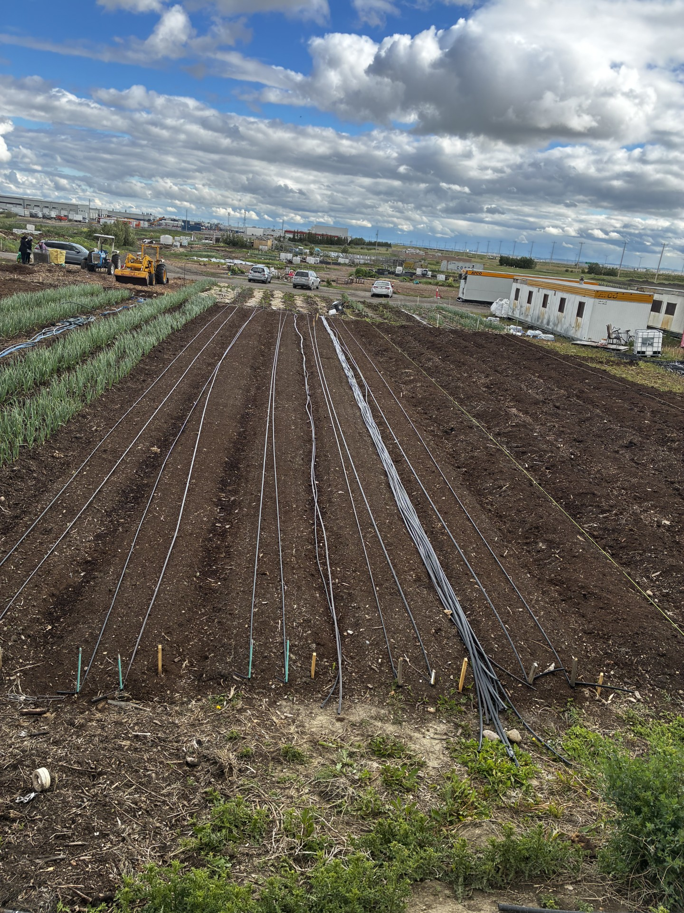

Recent Projects



At Drip or Drown Irrigation we believe every lawn deserves an efficient irrigation system that saves water while keeping your landscape healthy.
We specialize in residential irrigation installations, sprinkler repairs, seasonal maintenance, smart irrigation upgrades and custom watering solutions designed specifically for Alberta's climate.
Our mission is simple: Deliver honest workmanship, quality products and professional service every single time.
Custom underground sprinkler systems designed specifically for your property.
Efficient watering systems for gardens, flower beds and landscaping.
Broken sprinkler heads, valve repairs, leaks and complete system upgrades.
Hunter Hydrawise and WiFi irrigation controllers to save water automatically.
Professional sprinkler blowouts before Alberta's freezing temperatures arrive.
Full inspections, adjustments and system testing every spring.
